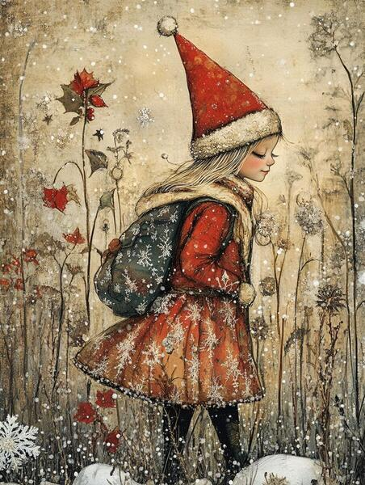

Winter Errand
A child walks the field's white edge in red coat and pointed cap, her pack weighted with something no scale could measure. She does not hurry. She does not pause. The grasses bend under snow's patient instruction; holly berries keep their crimson— still, since October. The girl slips between them, water through stone, slow, purposeful; the stone never asks why. What does she carry? Perhaps a wish spoken into December air, then forgotten; or the names of those who will wake alone on Christmas morn— each a small coal, a smoldering promise she guards in the night. Or maybe simply the knowledge that someone must walk between the world's asking and its answer. She is small. The field is wide. The snow continues its patient instruction. I watch from my window as she moves across the white expanse. Her feet make prints the snow will erase by evening, but for now they are there— small marks of passage, evidence of errand. Perhaps she carries the memory of kindness, redistributing what we've forgotten we once gave freely. Or perhaps she is simply cold, walking home through fields, her backpack full of schoolbooks or stones she collected, or nothing at all. Does it matter? The snow falls. The child walks. Somewhere a door will open. And whether her burden is magic or mundane, she carries it the way the holly carries its berries, the way the snow carries itself from sky to earth— without asking why, without asking if anyone notices. She walks. The field receives her. The winter holds both in its white palm— patient and impartial as all true giving must be. By evening she will be gone. The snow will cover her tracks. But something will remain— not evidence, not proof— more like the feeling that someone passed this way carrying something necessary, something we didn't know we needed until we noticed its arrival: a warmth without source, a door left slightly open, the sense that we've been quietly tended— the way one tends a small flame in a large darkness, so others might see by its light, though the light itself goes unnoticed, as essential and invisible as breathing, as silent and persistent as this snow, as necessary as this girl, this mission, this faithful crossing between what we've forgotten and what we most need to remember.